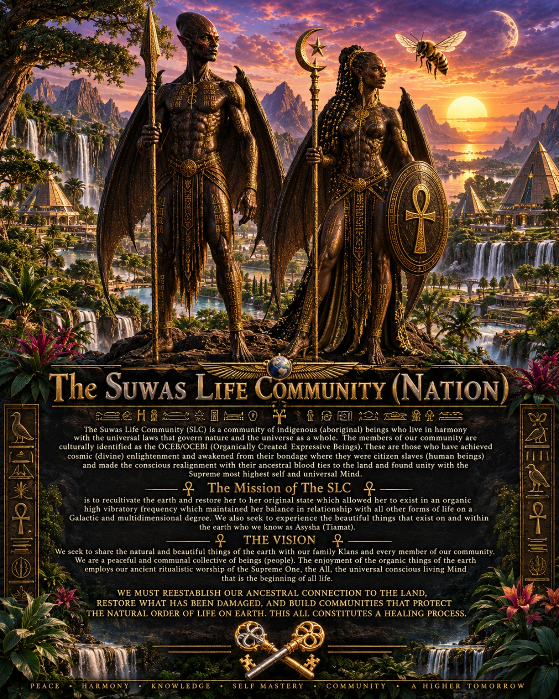
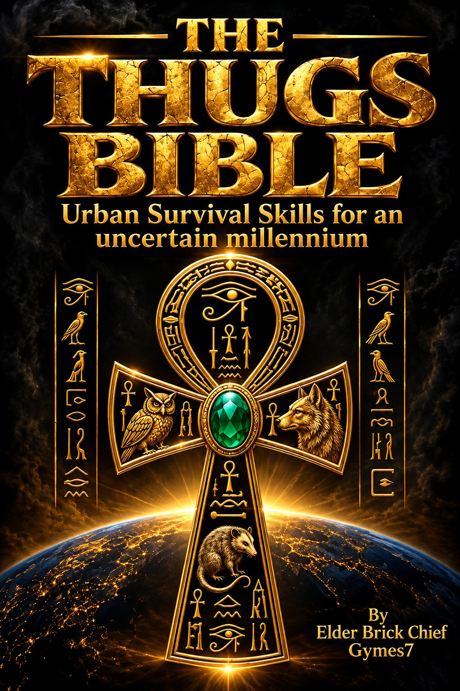
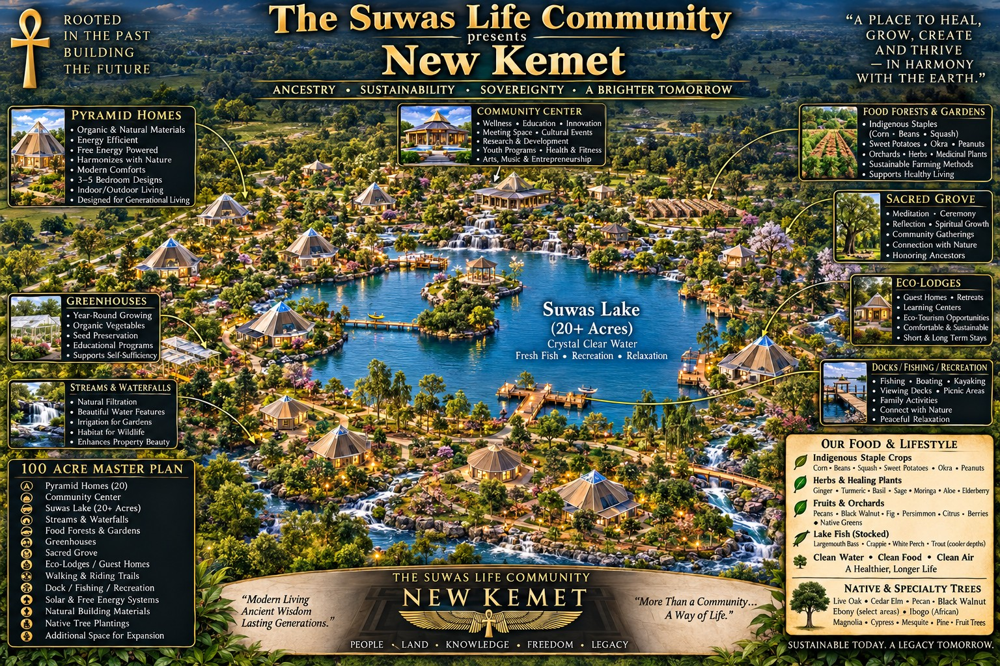
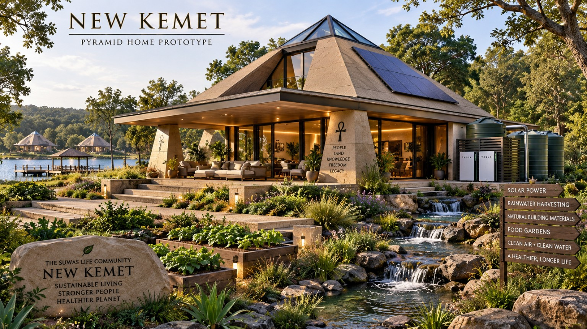
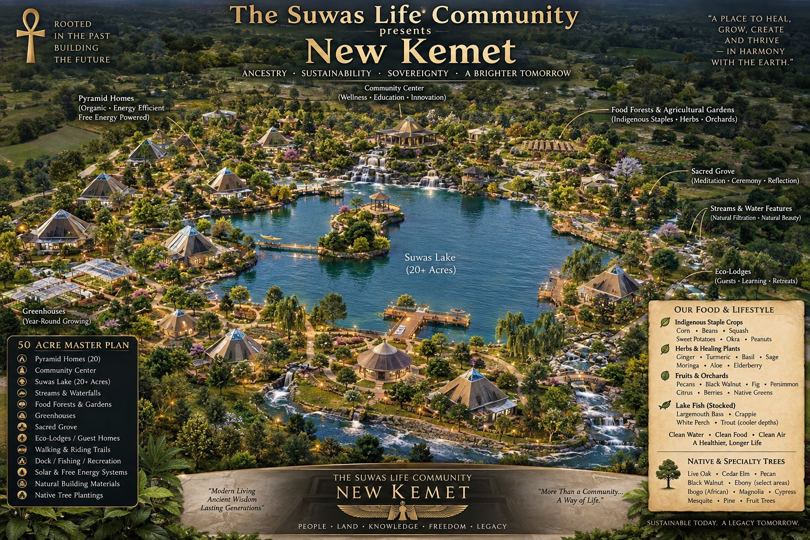
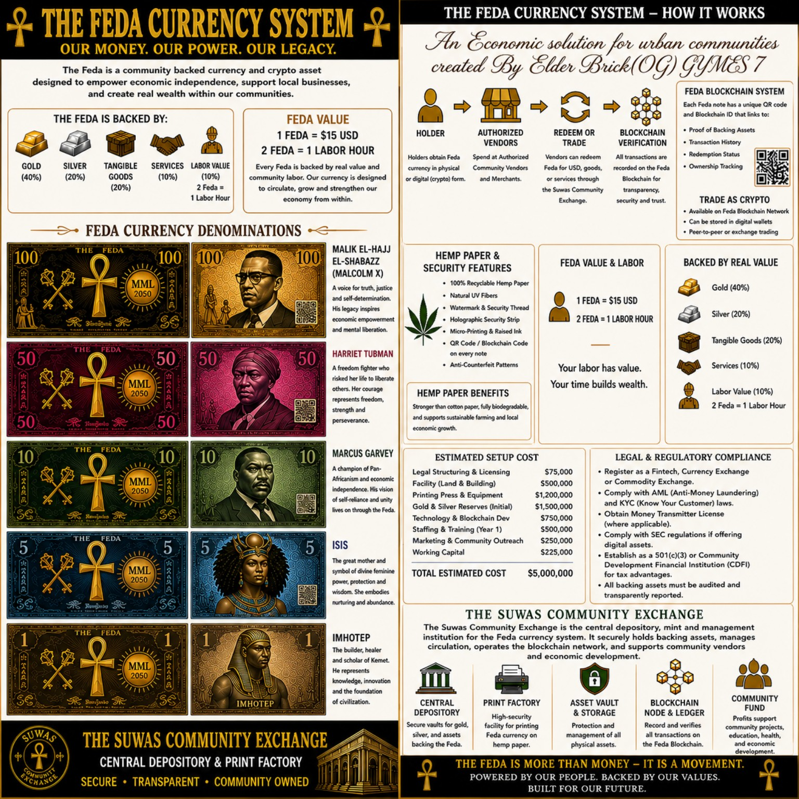
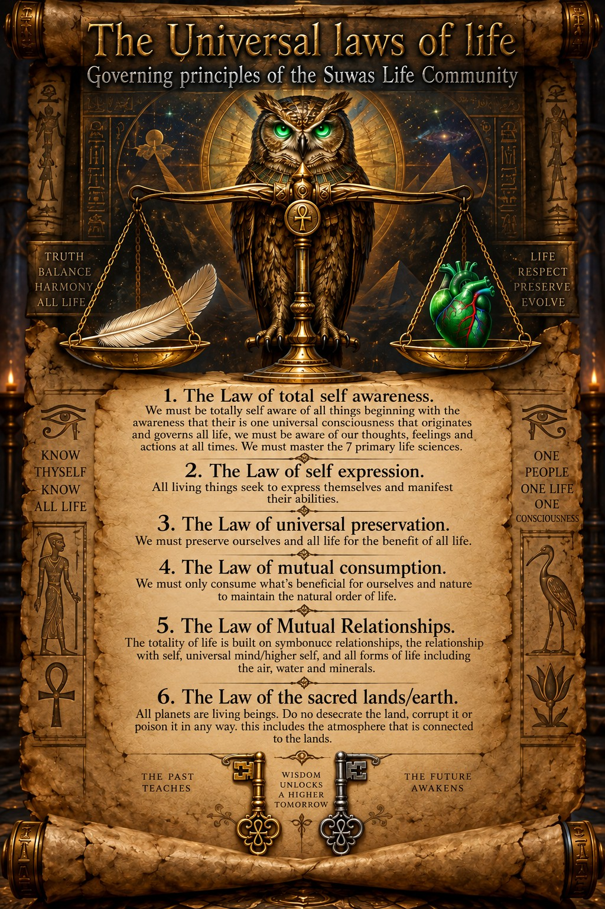

IDENTITYKnow who you are before the world defines you.

KNOWLEDGE • DISCIPLINE • SURVIVAL



To add your own carousel photo: upload it beside index.html, copy any complete <article class="slide"> block in index.html, and change the filename, heading and caption. The navigation dot is created automatically.
The mission of Scientific Urbanism is to teach the necessary skills required to survive life in the New Millennium for individuals ages 19–35, not to exceed 45 years of age. We accomplish this by utilizing the eight main elements of Hip Hop Culture.
First, we work with participants to establish a personal identity. Second, we assist them in creating a spiritual base that will guide them in all areas of life. Third, we inspire them to seek college or vocational training to obtain relevant skills and credentials to earn a legal income. Fourth, we teach how the World — the Machine/Matrix — operates and introduce participants to the inner workings of systems that govern society and the planet as a whole.
Fifth, we teach that there is a process to obtain the TRUTH. It begins with mastering the 66 books of the KJ Bible and the 114 suras of the Holy Quran: 66 + 114 = 180, representing 180 degrees, or half of universal truth. The other 180 degrees comes from mastering 25,000 years of History, Science and Mathematics, each providing 90 degrees. 180 + 180 = 360 degrees of universal truth in any area of life.
“We teach these things to every man, woman and child we meet. Absolutely nothing comes before the MISSION!”
Application, orientation and student pathway.
Member learning library and structured curriculum.
Community news covering Hip Hop and urban culture, survival skills, resources, interviews and perspectives.
Enter Street VoiceFeaturing Cozmoz — “Wear the Universe” by Svpreme, plus books, educational tools and community products.
Visit MarketplaceA gateway to New Kemet, community principles, resources and systems.
Enter CommunityFuture audio and video conversations from Scientific Urbanism.

G.F.M. represents our core principles for achieving our purpose in life: God first, Family second, and Get Money.
We put God — the Universal Mind and Creator — first. We place our obligations to and love for family second. Third, we “Get Money”: income, resources, valuable information and survival skills.
This principle calls for the 80/20 Survival Protocol. Forty percent of our effort is devoted to jobs and careers: working, obtaining certified skills and elevating our occupational status. Another forty percent is devoted to creating legitimate side businesses and diversified streams of income. A person should develop multiple dreams and opportunities for sustainable income.
The remaining twenty percent concerns private personal affairs. Privacy should remain lawful and responsible; this principle does not encourage evading the law or concealing harmful or illegal activity.
The goal is to sustain an honorable, self-supporting lifestyle and pass practical financial knowledge, discipline and survival skills to our youth.
A Suwas Life Community concept for studying community economics, exchange, productive labor, resources and local ownership.

Concept/demo material only. Any real currency, crypto-asset, exchange, investment or money-transmission program would require independent legal, financial, tax and regulatory review before launch.

Scientific Urbanism’s community news source covering Hip Hop and urban culture, practical survival knowledge, community resources, interviews and perspectives from the street.
A future home for original reporting, interviews, reviews and cultural commentary.
Practical information on education, employment, finances, community resources and everyday preparedness.
Wear the Universe — by Svpreme.
The Stage Two marketplace introduces Cozmoz as its featured clothing line. Product photography, individual products, prices, checkout and inventory can be connected in the next stage without changing the Scientific Urbanism theme.
This demo does not process payments yet.